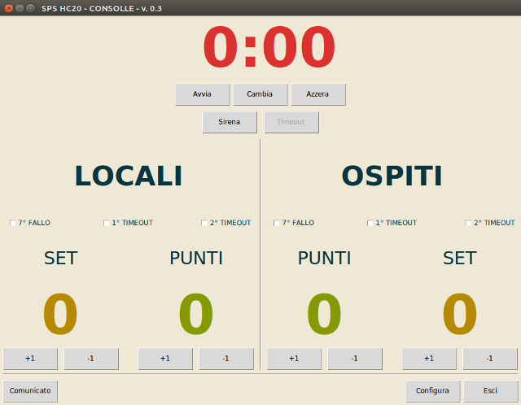
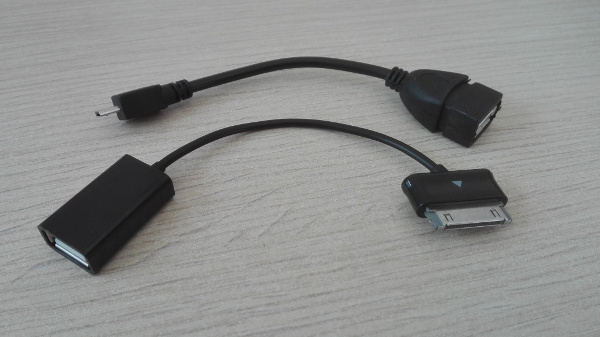
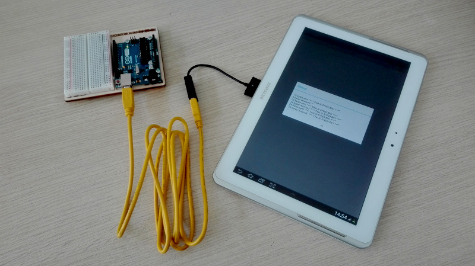
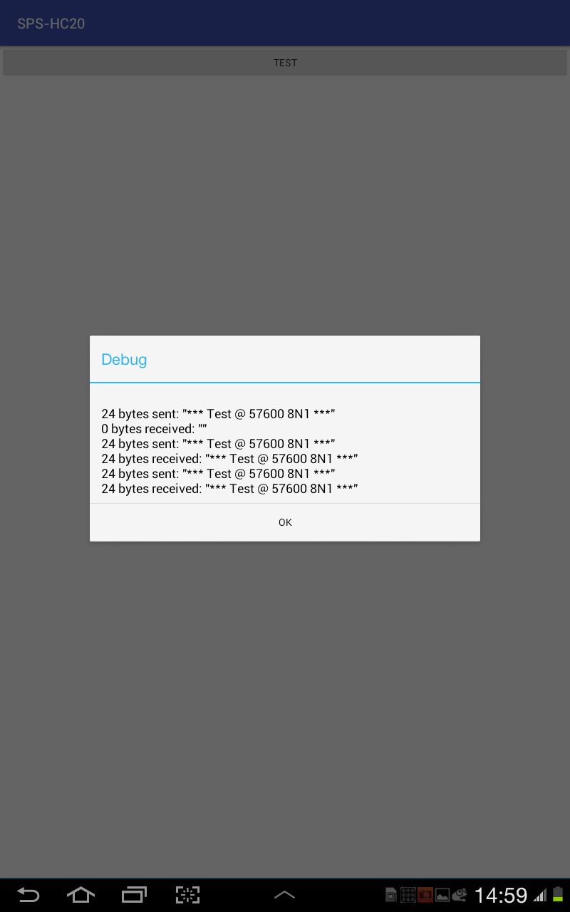
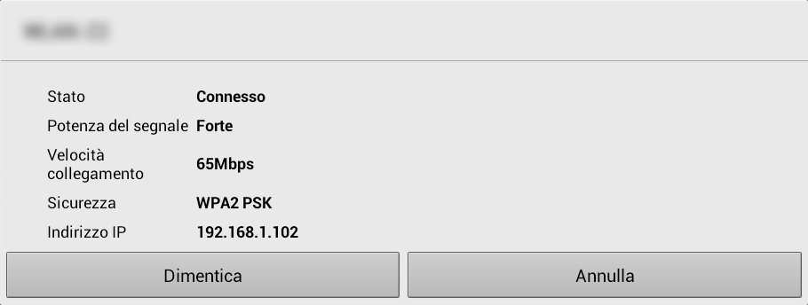

risorse | comunicazione seriale arduino/android via usb
Attenzione: ho posto la massima cura ed attenzione nel redigere questi appunti; declino tuttavia ogni responsabilità per eventuali imprecisioni, errori od omissioni, così come declino ogni responsabilità per eventuali danni a cose, proprietà o persone derivanti dall’uso di questi contenuti.
Vorrei portare su Android il programma per PC «Consolle» che ho sviluppato per il controllo di un tabellone segnapunti. Il programma al momento gira su un vetusto portatile e il suo uso risulta macchinoso perché il computer non è dotato di touch screen. Nella foga della partita non è facile centrare sempre il pulsante giusto, e l'illuminazione della zona dei refertisti in palestra non è ottimale.
L'interfaccia di controllo del tabellone segnapunti
Poiché tutti gli smartphone e i tablet in circolazione ne sono dotati, ho pensato di riscrivere il programma per Android. Prima di tutto devo però accertarmi di poter inviare i comandi di controllo dal terminale Android alla scheda Arduino che pilota il tabellone via USB, perché il Bluetooth in questo caso non è un'opzione.
Il primo passo consiste nel procurarsi un dispositivo Android in grado di funzionare come host USB. Dei tre terminali in mio possesso, un tablet Samsung Galaxy Tab 2 10.1, uno smartphone Samsung J3 e un Huawey P8 Light, solo i primi due supportano tale modalità, nota come USB OTG.
Per attivare la modalità OTG (nei dispositivi che la supportano!) è necessario utilizzare un apposito cavetto di connessione: l'impiego di questo particolare accessorio fa sì che il dispositivo Android commuti da slave a master.
Poiché il Samsung Galaxy Tab 2 è sprovvisto di una presa USB standard, ho dovuto acquistare due cavetti OTG: uno standard per una presa USB micro, da usare con il Samsung J3, e uno per il connettore proprietario del tablet:
In alto il cavo OTG standard per il Samsung J3, sotto quello dedicato per il Galaxy Tab
Resta ora da verificare come si possa stabilire una comunicazione seriale con Arduino.
Per verificare la comunicazione tra il terminale Android e la scheda Arduino ho caricato su quest'ultima un programma di echo seriale (qui il sorgente):
void setup() {
Serial.begin(57600);
}
void loop() {
while (Serial.available() > 0)
Serial.print((char)Serial.read());
}
Il principale riferimento per lo sviluppo di applicazioni che comunicano attraverso la porta seriale USB è la sezione USB host overview della documentazione ufficiale; in rete si trovano poi vari progetti che coinvolgono espressamente la scheda Arduino Uno (due esempi: How to Use Your Android to Communicate with Your Arduino, USB Communication between Android and Arduino). Molti di questi si basano su librerie di terze parti, in particolare UsbSerial che, pur essendo particolarmente diffusa, è affetta da qualche problema, in particolare non supporta Android 5.1.1 Lollipop. Per avere il massimo grado di libertà e soprattutto farmi un'idea di come funziona l'API sottostante, ho deciso di sviluppare in autonomia il codice di comunicazione, traendo comunque ispirazione dai progetti open che hanno fatto la stessa scelta.
Le funzionalità relative all'Host USB sono state introdotte nell'API 12; è quindi indispensabile basare l'applicazione su un'API di pari livello o superiore. È inoltre necessario indicare nel file AndroidManifest.xml che l'applicazione richiede l'accesso a tale componente aggiungendo la riga evidenziata:
<?xml version="1.0" encoding="utf-8"?>
<manifest xmlns:android="http://schemas.android.com/apk/res/android"
package="com.theengineeringprojects.dani" >
<uses-feature android:name="android.hardware.usb.host" />
<application
android:allowBackup="true"
android:icon="@mipmap/ic_launcher"
...
</manifest>
Per poter comunicare con Arduino è necessario individuare l'oggetto software — istanza della classe android.hardware.usb.UsbDevice — che lo rappresenta. Esistono due modi per farlo: registrarsi e attendere una notifica dal sistema operativo dell'avvenuto collegamento della scheda alla presa USB oppure effettuare una scansione manuale. Il primo è il più semplice, e richiede un secondo intervento nel file AndroidManifest.xml:
<?xml version="1.0" encoding="utf-8"?>
<manifest xmlns:android="http://schemas.android.com/apk/res/android"
package="com.theengineeringprojects.dani" >
<uses-feature android:name="android.hardware.usb.host" />
<application
android:allowBackup="true"
android:icon="@mipmap/ic_launcher"
android:label="@string/app_name"
android:supportsRtl="true"
android:theme="@style/AppTheme" >
<activity android:name=".MainActivity" >
<intent-filter>
<action android:name="android.intent.action.MAIN" />
<category android:name="android.intent.category.LAUNCHER" />
</intent-filter>
<intent-filter>
<action
android:name="android.hardware.usb.action.USB_DEVICE_ATTACHED" />
</intent-filter>
<meta-data
android:name="android.hardware.usb.action.USB_DEVICE_ATTACHED"
android:resource="@xml/device_filter" />
</activity>
</application>
</manifest>
La risorsa device_filter citata nel manifesto è un file XML salvato nella cartella res che specifica i dispositivi USB per i quali l'applicazione desidera ricevere la notifica dell'evento USB_DEVICE_ATTACHED. Ogni dispositivo USB è identificato univocamente da un quintetto di codici numerici: vendor-id, product-id, class, subclass e protocol. La pagina The USB ID Repository contiene un elenco esaustivo di tali identificativi; uno più “ragionato” è invece reperibile nei sorgenti della libreria usb-serial-for-android. Dagli elenchi si ricava il vendor-id associato ad Arduino, che è 9025 (esadecimale 0x2341). Il product-id varia a seconda della tipologia e della revisione della scheda; se non lo si indica, il sistema operativo invierà all'applicazione la notifica USB_DEVICE_ATTACHED qualunque scheda Arduino venga collegata, indipendentemente dal product-id che la caratterizza. Il file device_filter.xml assume quindi la forma:
<?xml version="1.0" encoding="utf-8"?>
<resources>
<!-- 0x2341 / Arduino -->
<usb-device vendor-id="9025" />
</resources>
A questo punto, quando l'utente collega una qualunque scheda Arduino al terminale Android, il sistema operativo avvia l'applicazione se non è già attiva, e chiama il metodo onResume. Da qui è possibile ottenere un riferimento all'oggetto UsbDevice associato alla scheda appena collegata:
public class MainActivity extends AppCompatActivity {
...
@Override
public void onResume() {
super.onResume();
Intent intent = getIntent();
String action = intent.getAction();
if (UsbManager.ACTION_USB_DEVICE_ATTACHED.equals(action)) {
UsbDevice device =
(UsbDevice)intent.getParcelableExtra(
UsbManager.EXTRA_DEVICE);
...
}
}
}
Il secondo metodo di individuazione della scheda Arduino consiste nell'effettuare una scansione di tutti i dispositivi USB collegati al terminale Android alla ricerca del primo marcato «Arduino», cioè con vendor-id pari a 9025:
HashMap<String, UsbDevice> deviceList = usbManager.getDeviceList();
Iterator<UsbDevice> deviceIterator = deviceList.values().iterator();
while(deviceIterator.hasNext()) {
UsbDevice usbDevice = deviceIterator.next();
if (usbDevice.getVendorId() == 9025) {
// this is an Arduino device!
break;
}
}
Questa soluzione ha lo svantaggio che l'applicazione non viene avviata automaticamente al collegamento della scheda Arduino al terminale Android.
Android riconosce quando l'utente scollega un dispositivo USB dal terminale, ed è possibile richiedere al sistema operativo di inviare una notifica al verificarsi di questa condizione. È sufficiente registrare l'applicazione sull'evento USB_DEVICE_DETACHED, anche se non in modo dichiarativo come fatto per l'evento USB_DEVICE_ATTACHED — cioè modificando il file AndroidManifest.xml — ma a runtime, per mezzo di un BroadcastReceiver. L'aggancio avviene in due fasi; innanzitutto si definisce il listener, l'oggetto che contiene il codice da eseguire alla disconnessione del dispositivo:
public class MainActivity extends AppCompatActivity {
...
// create a listener for the ACTION_USB_DEVICE_DETACHED event
private final BroadcastReceiver usbReceiver = new BroadcastReceiver() {
public void onReceive(Context context, Intent intent) {
String action = intent.getAction();
if (UsbManager.ACTION_USB_DEVICE_DETACHED.equals(action)) {
// an USB device has been detached!
}
}
};
...
}
Si collega quindi il listener all'evento USB_DEVICE_DETACHED, di norma durante la fase di inizializzazione dell'applicazione, per mezzo di un IntentFilter:
public class MainActivity extends AppCompatActivity {
...
@Override
protected void onCreate(Bundle savedInstanceState) {
super.onCreate(savedInstanceState);
setContentView(R.layout.activity_main);
...
// register the ACTION_USB_DEVICE_DETACHED event listener
IntentFilter filter = new IntentFilter();
filter.addAction(UsbManager.ACTION_USB_DEVICE_DETACHED);
registerReceiver(usbReceiver, filter);
...
}
}
Arduino si presenta sul bus USB come un Communications Device Class (CDC, cfr. sez. «Communications Device Class» in USB Device Class Specifications), ovvero un dispositivo di comunicazione. Si tratta di dispositivi compositi, dotati cioé di più interfacce; per poter instaurare un canale di comunicazione con questo tipo di dispositivo è indispensabile individuare la giusta interfaccia. In questo contesto l'interfaccia cercata è dotata di due endpoint — uno di ingresso e uno d'uscita — che supporta il trasferimento bulk. Se un'interfaccia con tali caratteristiche viene individuata, si procede aprendo un canale di comunicazione verso il dispositivo e collegandolo all'interfaccia appena trovata:
public class UsbPort {
...
private UsbManager usbManager;
private UsbDevice usbDevice;
private UsbEndpoint usbInEndpoint;
private UsbEndpoint usbOutEndpoint;
private UsbInterface usbInterface;
private UsbDeviceConnection usbConnection;
...
public UsbPort(UsbManager manager) {
usbManager = manager;
reset();
}
...
private boolean attach(UsbDevice device) {
usbInEndpoint = null;
usbOutEndpoint = null;
// search for a suitable interface,
// i.e. one that supports bidirectional bulk transfers
for (int i = 0; i < device.getInterfaceCount(); i++) {
UsbInterface iface = device.getInterface(i);
int numOfEndpoints = iface.getEndpointCount();
if (numOfEndpoints > 1) {
for (int j = 0; j < numOfEndpoints; j++) {
if (iface.getEndpoint(j).getType() ==
UsbConstants.USB_ENDPOINT_XFER_BULK) {
if (iface.getEndpoint(j).getDirection()
== UsbConstants.USB_DIR_IN) {
usbInEndpoint = iface.getEndpoint(j);
} else if (iface.getEndpoint(j).getDirection()
== UsbConstants.USB_DIR_OUT) {
usbOutEndpoint = iface.getEndpoint(j);
}
}
}
if (usbInEndpoint != null && usbOutEndpoint != null)
usbInterface = iface;
}
}
if (usbInterface == null)
return false;
usbDevice = device;
usbConnection = usbManager.openDevice(usbDevice);
if (usbConnection == null)
return false;
return usbConnection.claimInterface(usbInterface, true);
}
...
private void reset() {
usbConnection = null;
usbInEndpoint = null;
usbOutEndpoint = null;
usbInterface = null;
usbDevice = null;
}
...
}
Il trasferimento di dati da/per Arduino avviene con il metodo bulkTransfer dell'oggetto UsbDeviceConnection:
public class UsbPort {
...
public int send(byte[] data, int timeout) {
if (usbConnection == null)
return 0;
return usbConnection.bulkTransfer(
usbOutEndpoint, data, data.length, timeout);
}
public int receive(byte[] buffer, int timeout) {
if (usbConnection == null)
return -1;
return usbConnection.bulkTransfer(
usbInEndpoint, buffer, buffer.length, timeout);
}
...
}
La configurazione della porta seriale avviene con il metodo controlTransfer dell'oggetto UsbDeviceConnection, cui per comodità accedo attraverso un adapter:
public class UsbPort {
...
private static final int CDC_SET_LINE_CODING = 0x20;
private static final int CDC_REQTYPE_HOST2DEVICE = 0x21;
private static final int CDC_SET_CONTROL_LINE_STATE = 0x22;
private static final int CDC_CONTROL_LINE_OFF = 0x0000;
private static final int CDC_CONTROL_LINE_ON = 0x0003;
private static final int USB_TIMEOUT = 5000; // ms
...
private int setControlCommand(int request, int value, byte[] data) {
return usbConnection.controlTransfer(
CDC_REQTYPE_HOST2DEVICE,
request,
value,
0,
data,
(data == null) ? 0 : data.length,
USB_TIMEOUT);
}
...
}
Il parametro bmRequestType — un intero che rappresenta una maschera di bit — è impostato a 0x21 perché si tratta di un trasferimento diretto verso l'interfaccia del dispositivo (cfr. The Setup Packet e la risposta explanation about controltransfer in android to set up the USB communication in Stackoverflow per maggiori dettagli):
Relativamente alla configurazione della porta seriale, i parametri assumono i seguenti significati (cfr. sez. 6.3.10 «SetLineCoding» del file PSTN120.pdf che si trova all'interno dell'archivio CDC1.2_WMC1.1_012011.zip rilasciato dal consorzio USS-IF e contentente la documentazione ufficiale relativa alla classe di dispositivi CDC — qui una copia locale del file):
| Parametro | Valore |
|---|---|
| request | 0x20 |
| value | non utilizzato |
| data |
array di 7 byte così ripartiti:
|
Poiché lo sketch caricato su Arduino lavora a 57600 8N1, la porta seriale del terminale Android va configurata di conseguenza:
public class UsbPort {
...
public boolean connect(UsbDevice device) {
if (attach(device) && configure())
return true;
reset();
return false;
}
...
private boolean configure() {
final byte[] portConfigData = new byte[] {
(byte) 0x00, // baud rate: 57600
(byte) 0xE1,
(byte) 0x00,
(byte) 0x00,
(byte) 0x00, // 1 stop bit
(byte) 0x00, // no parity
(byte) 0x08 // 8 data bits
};
setControlCommand(
CDC_SET_LINE_CODING,
0,
portConfigData);
setControlCommand(
CDC_SET_CONTROL_LINE_STATE,
CDC_CONTROL_LINE_ON,
null);
return true;
}
...
}
Nella funzione compare una seconda chiamata al metodo setControlCommand. Il suo scopo è abilitare le linee DTR – Data Terminal Ready e RTS – Request To Send per indicare ad Arduino che il terminale Android è disponibile e pronto a ricevere dati (cfr. sez. 6.3.12 «SetControlLineState» del file PSTN120.pdf). In questo caso i valori dei parametri sono:
| Parametro | Valore |
|---|---|
| request | 0x22 |
| value |
maschera di bit così ripartiti:
|
| data | non utilizzato |
Avendo attivato le linee DTR/RTS all'apertura della connessione, si disattivano in chiusura:
public class UsbPort {
...
public void disconnect() {
detach();
}
...
private void detach() {
if (usbConnection == null)
return;
setControlCommand(
CDC_SET_CONTROL_LINE_STATE,
CDC_CONTROL_LINE_OFF,
null);
usbConnection.releaseInterface(usbInterface);
usbConnection.close();
reset();
}
...
}
Approntata una semplice applicazione costituita da un'unica attività che ciclicamente invia la stringa “*** Test @ 57600 8N1 ***” sulla porta seriale per poi porsi in attesa di una risposta, ho potuto verificare che il codice funziona:
Il circuito di test
L'esito del primo test di comunicazione
Si può notare che la prima trasmissione è fallita. La cosa è imputabile al fatto che all'apertura della connessione Arduino effettua un reset automatico che lo rende “sordo” per qualche secondo (cfr. DisablingAutoResetOnSerialConnection sui forum ufficiali).
Sebbene la classe UsbPort abbia dato buona prova di sè con l'echo seriale, lo stesso non è accaduto quando ho implementato il protocollo di comunicazione utilizzato dal programma di controllo del tabellone segnapunti, che prevede la trasmissione di un pacchetto di comando di 14 byte cui segue la risposta di Arduino, costituita da un unico byte (ACK/NAK):
private byte[] txBuffer = new byte[14];
...
txBuffer[0] = 0x02;
txBuffer[1] = 0x00;
...
usbPort.send(txBuffer, TIMEOUT);
byte[] response = new byte[] { NUL, };
while (usbPort.receive(response, TIMEOUT) > 0)
;
if (response[0] == NUL)
timeoutCount += 1;
else if (response[0] == ACK)
ackCount += 1;
else if (response[0] == NAK)
nakCount += 1;
else
errorCount += 1;
...
L'applicazione terminava invariabilmente con errore dopo aver inviato non più di 3/4 pacchetti. Ho così scoperto che il metodo bulkTransfer scarica tutti i dati ricevuti nel buffer predisposto, anche se questi eccedono la sua capacità. Conviene quindi allocare un buffer sufficientemente ampio da contenere il pacchetto più grande che si possa ricevere. Tale dimensione si ottiene dal metodo getMaxPacketSize dell'oggetto UsbEndpoint associato al terminale d'ingresso (nel caso della scheda Arduino Uno collegata al tablet in mio possesso è pari a 64):
public class UsbPort {
...
public int getSuggestedInputBufferSize() {
return usbInEndpoint.getMaxPacketSize();
}
...
}
Utilizzando tale valore come dimensione del buffer d'ingresso non si sono più verificati errori di sorta. Il codice completo della classe UsbPort è scaricabile qui.
L'emulatore Android non supporta la porta USB, quindi il test dell'applicazione va fatto su un terminale reale. D'altra parte non è possibile utilizzare il debugger con l'applicativo remoto perché, dopo aver trasferito l'applicazione, la presa USB del terminale va scollegata dal PC e collegata alla scheda Arduino. Fortunatamente esiste la possibilità di attivare il debug wireless, purché il terminale Android non sia stato aperto (rooted) in precedenza.
Seguendo le istruzioni riportate nella domanda di Stackoverflow ADB connect to a device via TCP/IP sono riuscito ad attivare questa modalità di debugging. Quando il terminale Android è ancora connesso al PC, dare i seguenti comandi:
$ cd ~/Android/Sdk/platform-tools $ adb tcpip 5555 restarting in TCP mode port: 5555 $ adb connect <IP-DISPOSITIVO>:5555
L'indirizzo IP del terminale si trova nelle proprietà della connessione Wi-Fi:
Le proprietà della rete Wi-Fi sul Samsung Galaxy Tab 2
Il comando in questo caso assume la forma:
$ adb connect 192.168.1.102:5555 connected to 192.168.1.102:5555
A questo punto si può scollegare il cavo USB e procedere con il debugging. Se si è interessati a visualizzare il log prodotto dall'applicazione sul terminale, dare il comando (cfr. Logcat command-line tool):
$ adb logcat
Per disconnettere il terminale Android dare il comando:
$ adb disconnect 192.168.1.102:5555 disconnected 192.168.1.102:5555
Se non si specifica l'indirizzo, il comando disconnette tutti i dispositivi connessi:
$ adb disconnect disconnected everything
Infine, per riattivare il debug via USB riavviare il terminale Android oppure dare il comando:
$ adb usb restarting in USB mode
Pagina modificata il 11/09/2018